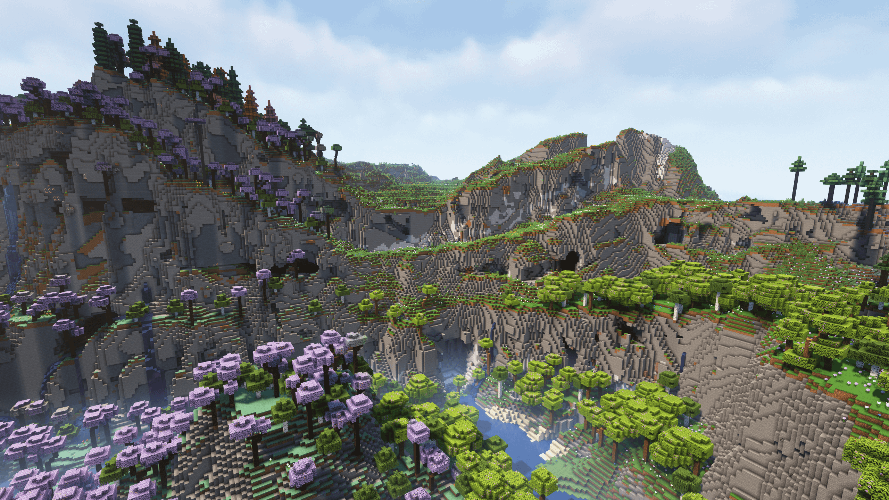

Shattered Wilds:
- Fixed bug causing non-player entities to trigger advancements related to the Shattered Wilds.
- Fixed bug causing creepers to drop a lingering potion when they explode in the Shattered Wilds.
Shattered Wilds:
- Added 4 new advancements (2 tasks, 1 goal, and 1 challenge).
- Added a global sound effect when a player dies.
- Weather now has a chance to turn into thunderstorm when a player dies in the Shattered Wilds.
- Removed the minecraft:resistance effect on monsters.
- Monsters will now have the minecraft:absorption effect instead of resistance.
- Fixed bug that allows players to set their respawn points using beds. Players will now always respawn in the world spawn in the overworld.
- Fixed bug that allows players to bypass sleep restrictions.
- Removed impossible nodes in the advancements screen.
- Removed the potion particle effects on monsters.

Shattered Wilds:
- Shattered Wilds is live! :pog.gif:
- Added 90+ new surface and cave biomes. :dance.gif:
- Added 51 new structures. :pikaomg.gif:
- Added 10 new enchantments
- Antidote - Negates all damage from poison and deals it to the chestplate. Incompatible with Protection enchantments.
- Curse of conductivity - Gives a chance to get struck by lightning during a thunderstorm.
- Illagers bane - Deal extra damage to Illagers, Vexes, Witches and Ravagers. Incompatible with Sharpness, Smite, Bane of Arthropods.
- Outreach - Raises the block interaction range.
- Photosynthesis - Repairs the item when is in direct view of the sun :pepestonks.webp:. Incompatible with Mending.
- Traveler - Faster sprinting speed and step up full blocks. Incompatible with Soul speed.
- Might - Power for crossbow. +0.5 damage added per level to arrows fired from this crossbow.
- Blowthrough - Piercing for bow. Allows an arrow to go through mobs.
- Tri-shot - Multishot for bows. Makes the bow fire 3 arrows.
- Spitefull - Below 2.5 hearts players are given +2 (+2 per level) attack damage. If hit by a mob there is a 30% (+15% per level) chance to get Strength 1 for 1-3 seconds.
- Added the following gameplay mechanics for shattered wilds:
- Buffed monster's resistance, damage, and speed.
- Slightly increased spawn limits which means slightly more mobs will spawn.
- You got insomnia. Sleeping is disabled in the wilds.
- Disabled respawn points. Dying in the Shattered Wilds will always respawn you to the overworld.
- Disabled TPA commands.
- Disabled the nether.
- Disabled creeper griefing.
[Req #0001] As requested by someone, you can now instantly chop a tree by cutting one block. Axes lose durability depending on logs cut. Won't work when sneaking.- Geyser has been updated to support Bedrock 1.21.6.
- More updates to shattered wilds.
- More qol updates
- End update ig.